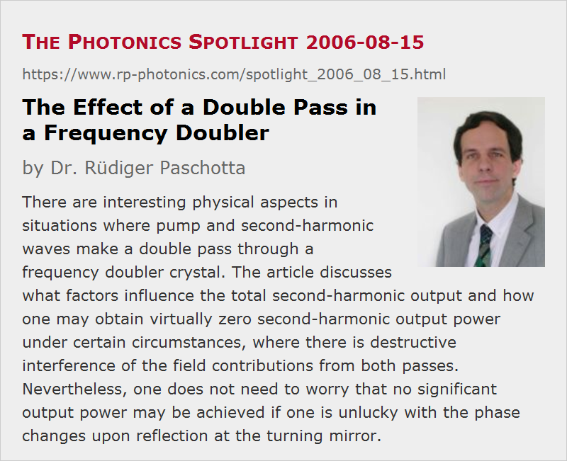

The Effect of a Double Pass in a Frequency Doubler
Posted on 2006-08-15 as a part of the Photonics Spotlight (available as e-mail newsletter!)
Permanent link: https://www.rp-photonics.com/spotlight_2006_08_15.html
Author: Dr. Rüdiger Paschotta, RP Photonics Consulting GmbH
Abstract: There are interesting physical aspects in situations where pump and second-harmonic waves make a double pass through a frequency doubler crystal. The article discusses what factors influence the total second-harmonic output and how one may obtain virtually zero second-harmonic output power under certain circumstances, where there is destructive interference of the field contributions from both passes. Nevertheless, one does not need to worry that no significant output power may be achieved if one is unlucky with the phase changes upon reflection at the turning mirror.
Ref.: R. Paschotta et al., “Nonlinear mode coupling in doubly-resonant frequency doublers”, Appl. Phys. B 58, 117 (1994); encyclopedia articles on frequency doubling, resonant frequency doubling, and intracavity frequency doubling

A common question arising in the context of frequency doubling in nonlinear crystal materials is what exactly happens when both the pump and the second-harmonic radiation are doing a double pass through the nonlinear crystal. This occurs quite often, e.g. when the frequency doubler is located in a linear resonator – either a laser resonator or a resonant doubling cavity. Does one then simply obtain the sum of the second-harmonic powers generated in both passes through the crystal, or the same as for a crystal of twice the length?
A crucial aspect is that the total second-harmonic output can be described with complex amplitudes which are the sum of amplitude contributions from the two passes through the crystal. If both contributions have the same phase, they add up coherently, and the second-harmonic output power can be four times that of a single pass (as the amplitude has been doubled), provided that pump depletion is weak. For destructive interference, however, the two contributions may cancel each other: the second-harmonic light generated in the first pass is converted back to pump light in the second pass.
How exactly these amplitudes combine is determined by both the phase mismatch in the crystal and the relative phase change of fundamental and infrared light between the two passes (e.g. upon reflection at the end mirror or through chromatic dispersion in air). It may appear strange to define a relative phase of two waves with different frequencies, but what is actually meant is the phase of the term E12 E2* (with E1 and E2 being the complex electric fields of fundamental and second-harmonic wave). In other words, we are dealing with two times the phase of the fundamental wave minus that of the second-harmonic wave.
One might be concerned that one may obtain nearly no second-harmonic output in case that one is unfortunate with the relative phase change at the end mirror – which can be optimized with proper coating design software, but is hard to measure. However, even in the worst case one can avoid a drastic reduction of second-harmonic power by optimizing the phase mismatch (e.g. via the crystal temperature). So even those who don't care about all these issues may not get too severely hurt.
This article is a posting of the Photonics Spotlight, authored by Dr. Rüdiger Paschotta. You may link to this page and cite it, because its location is permanent. See also the RP Photonics Encyclopedia.
Note that you can also receive the articles in the form of a newsletter or with an RSS feed.
Questions and Comments from Users
Here you can submit questions and comments. As far as they get accepted by the author, they will appear above this paragraph together with the author’s answer. The author will decide on acceptance based on certain criteria. Essentially, the issue must be of sufficiently broad interest.
Please do not enter personal data here; we would otherwise delete it soon. (See also our privacy declaration.) If you wish to receive personal feedback or consultancy from the author, please contact him e.g. via e-mail.
By submitting the information, you give your consent to the potential publication of your inputs on our website according to our rules. (If you later retract your consent, we will delete those inputs.) As your inputs are first reviewed by the author, they may be published with some delay.
|  |
If you like this page, please share the link with your friends and colleagues, e.g. via social media:
These sharing buttons are implemented in a privacy-friendly way!